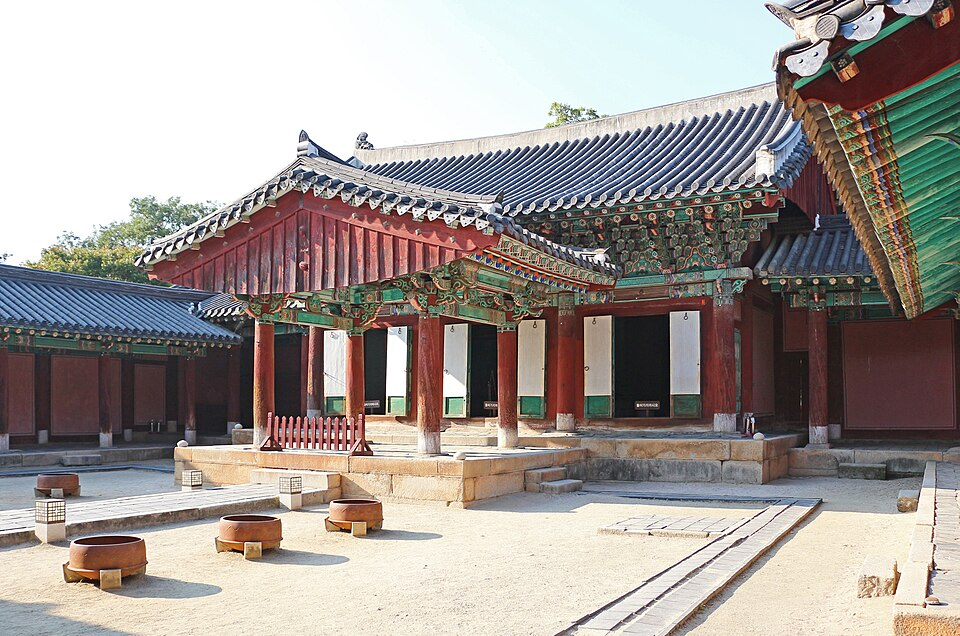

Panduan Kuliner Jeonju: Bibimbap, Jajanan Kaki Lima Desa Hanok, Pasar Malam Nambu dan Tteokgalbi Gunsan (dari Video Perjalanan)
Panduan berbasis video untuk makan di Jeonju, Kota Gastronomi UNESCO, dan wilayah Jeollabuk-do sekitarnya. Mencakup bibimbap, tteokgalbi dan hanjeongsik, jajanan di Desa Hanok, pasar malam Pasar Nambu, serta Istana Gyeonggijeon. Juga membahas tteokgalbi Gunsan dan kedai sundae gukbap di Jinan.
Jeonju, di Jeollabuk-do, adalah Kota Gastronomi UNESCO dan kota yang paling identik dengan bibimbap. Banyak vlogger perjalanan dan acara kuliner Korea datang ke sini untuk makan, dan panduan ini merangkum apa yang benar-benar mereka makan dan di mana. Isinya mencakup bibimbap, tteokgalbi (patty iga sapi panggang), hanjeongsik (set makan Korea berbagai hidangan), jajanan kaki lima Desa Hanok, dan pasar malam Pasar Nambu. Ada juga singgahan singkat ke Gunsan dan Jinan.
Bibimbap Jeonju: Makan di Tempat Asalnya
Bibimbap menjadi titik awal di sebagian besar video. Dalam Original Bibimbap & Night Market in Jeonju, kreatornya makan bibimbap di Hanguk Jip di Eojin-gil. Tur Ultimate Street Food Tour in Jeonju milik Luke Martin juga mampir ke restoran yang sama (ditulis Hankook Jib). Dalam deskripsinya, ia mengaku datang demi bibimbap, tetapi bulgogi-nya "mungkin alasan sebenarnya" untuk berkunjung ke Jeonju. Jadi, ada alasan untuk mencoba keduanya.
Dalam 24 Hours in Jeonju – Hanok Village & Best Bibimbap, pembawa acara makan bibimbap Jeonju autentik di restoran tradisional. Hidangannya berisi sayuran segar, daging sapi mentah, nasi, dan saus buatan sendiri. Acara web Korea Popular Restaurants (인기 맛집) mengambil sudut pandang yang lebih jenaka. Komedian Kwak Beom, warga asli Jeonju, berkunjung bersama Wonee dan Minami dari grup Lescenne. Mereka membahas rumor bahwa warga Jeonju sebenarnya tidak makan bibimbap khas Jeonju. Lalu mereka mengadu restoran rekomendasi manusia dengan restoran rekomendasi mesin untuk mencari bibimbap terbaik di kota ini.
Tteokgalbi dan Hanjeongsik
Tteokgalbi
Video Original Bibimbap & Night Market berhenti di Gyodong Tteokgalbi di Pungnam-dong. Steph dan Pete menghabiskan sebulan di Seoul, lalu dalam Jeonju Vlog – Gyeonggijeon Shrine & Tteokgalbi mereka datang ke Jeonju selama beberapa hari. Mereka mengunjungi kuil dan makan tteokgalbi.
Hanjeongsik
Jeonju juga dikenal dengan hanjeongsik, set makan tempat hidangan terus datang hingga meja penuh. Welcome, First Time in Korea? dari MBC every1 (EP.266) mengirim empat bersaudara dari Selandia Baru ke Jeonju. Mereka makan hanjeongsik lengkap dan belajar tentang sejarah Joseon di Istana Gyeonggijeon. Setelahnya mereka makan bingsu (es serut) dan menonton pertunjukan tradisional seperti pansori dan atraksi berjalan di tali.
Jajanan Desa Hanok dan Pasar Malam Nambu
Korean Street Food at Jeonju Hanok Village dari Aaron dan Claire berfokus pada camilan. Deskripsinya mencantumkan harga saat pengambilan gambar, yang mungkin sudah berubah:

📍 Desa Hanok Jeonju · Naver Map · Google Maps
- Bibim bbang (roti bibim): 3.000 won
- Bool ggo-cheng-i (gulungan bacon pedas dengan keju): 6.000 won
- Sate ayam dengan keju: 4.000 won
- Sayap ayam isi nasi goreng: 4.000 won
Dalam 24 Hours in Jeonju, pembawa acara menginap semalam di hanok, rumah tradisional Korea. Ia mencoba Choco Pie dari toko roti terkenal PNB bakery dan keju panggang yang mendesis. Video Original Bibimbap juga mengunjungi Da Urang Dumplings di Gyeonggijeon-gil dan Oehalmeonisomssi Cafe. Harinya diakhiri di pasar malam Pasar Nambu. Tur Luke Martin juga mencakup Pasar Nambu dan sebuah kedai pangsit.
Istana Gyeonggijeon: Sejarah di Sela Makan

📍 Istana Gyeonggijeon · Naver Map · Google Maps
Gyeonggijeon adalah kuil era Joseon di kawasan Desa Hanok. Baik bersaudara dari Selandia Baru maupun Steph dan Pete mengunjunginya. Sewa hanbok menjadi bagian dari suasana Desa Hanok, dan Anda akan melihat orang berjalan-jalan dengan pakaian tradisional di beberapa video.
Di Luar Jeonju: Tteokgalbi Gunsan dan Sundae Gukbap Jinan
Dalam satu video mukbang (acara makan) Korea, kreatornya memesan 10 porsi tteokgalbi Gunsan yang konon membuat orang datang dari seluruh negeri untuk mencicipinya. Tonton jika Anda ingin membandingkan versi Gunsan dengan versi Jeonju. Di Jinan, Sigol Sundae menyajikan sundae gukbap, sup sosis darah Korea dengan nasi. Tempat ini hanya buka sekitar tiga jam sehari, jadi Anda perlu mengatur waktu kunjungan.

📍 Sigol Sundae · Naver Map · Google Maps
Tips Perencanaan
- Beberapa tempat berada di sekitar Istana Gyeonggijeon sehingga Anda bisa berjalan kaki di antara mereka dan kuil. Tempat-tempat itu adalah Hanguk Jip (Eojin-gil), Da Urang Dumplings (Gyeonggijeon-gil), dan tempat jajanan dari video Aaron dan Claire (29 Eojin-gil).
- Banyak video mengikuti pola yang sama: Desa Hanok dan Gyeonggijeon di siang hari, lalu pasar malam Pasar Nambu di malam hari.
- Bibimbap, tteokgalbi dan hanjeongsik semuanya mengenyangkan. Rencanakan satu atau dua di antaranya per hari dan isi sela-selanya dengan jajanan kaki lima.
- Sigol Sundae di Jinan buka dalam waktu sangat singkat, jadi pastikan tempatnya buka sebelum berangkat.
- Harga yang disebutkan dalam video mencerminkan waktu saat video diambil.
Tempat di video
- Desa Hanok Jeonju (Jeonju Hanok Village) (전주 한옥마을) Bibimbap, jajanan kaki lima, sewa hanbok Naver Map Google Maps
- Sigol Sundae (Jinan) (시골순대 (진안)) Sundae gukbap (buka sekitar 3 jam sehari) Naver Map Google Maps
- Istana Gyeonggijeon (Gyeonggijeon Shrine) (경기전) Kuil bersejarah era Joseon Naver Map Google Maps
Lokasi dan jam buka bisa berubah, cek peta sebelum berangkat.
Video terkait
 Original Bibimbap & Night Market in Jeonju
Original Bibimbap & Night Market in Jeonju
 Ultimate Street Food Tour in Jeonju – Famous Bibimbap
Ultimate Street Food Tour in Jeonju – Famous Bibimbap
 24 Hours in Jeonju – Hanok Village & Best Bibimbap
24 Hours in Jeonju – Hanok Village & Best Bibimbap
 Korean Street Food at Jeonju Hanok Village
Korean Street Food at Jeonju Hanok Village
 뉴질랜드 사 형제의 전주 여행 – 한정식, 경기전 (EP.266)
뉴질랜드 사 형제의 전주 여행 – 한정식, 경기전 (EP.266)
 Jeonju Vlog – Gyeonggijeon Shrine & Tteokgalbi
Jeonju Vlog – Gyeonggijeon Shrine & Tteokgalbi
 전주의 아들이 추천하는 전주 1등 맛집🍚 (feat.리센느 원이,미나미) | 인기 맛집 | 곽범 [EN/JP]
전주의 아들이 추천하는 전주 1등 맛집🍚 (feat.리센느 원이,미나미) | 인기 맛집 | 곽범 [EN/JP]
 단체로 놀라셨어요ㅋㅋ👥👥 전국에서 찾아온다는 군산 떡갈비 10인분 먹방
단체로 놀라셨어요ㅋㅋ👥👥 전국에서 찾아온다는 군산 떡갈비 10인분 먹방
Artikel lainnya
- Panduan Kuliner Jeollanam-do: Kepiting Yeosu, Hidangan Laut dan Banchan Mokpo, serta Jajanan Gwangju dari Acara Kuliner Korea
- Panduan Makanan Jalanan & Pasar di Seoul: Apa yang Dimakan di Pasar Gwangjang, Pasar Ikan Noryangjin, dan Lainnya (Berdasarkan Video Food Tour)
- Panduan Kuliner Korea per Wilayah: Makanan Apa yang Dicoba di Seoul, Busan, Jeju, Mokpo, Daegu, Jeonju, dan Lainnya (dari Video Mukbang & Kuliner Populer di YouTube)
- Panduan Kuliner Pulau Jeju: Babi Hitam, Seafood, Pasar Malam Dongmun, dan Tempat Wisata di Sepanjang Jalan
- Panduan Perjalanan Gyeongju & Gyeongbuk: Situs Sejarah Silla, Andong, Pohang dan Kuliner Lokal
- Panduan Kuliner Gangwon: Seafood Sokcho, Hoe-guksu, Kepiting Salju dan Dakgalbi Chuncheon (dari Video)